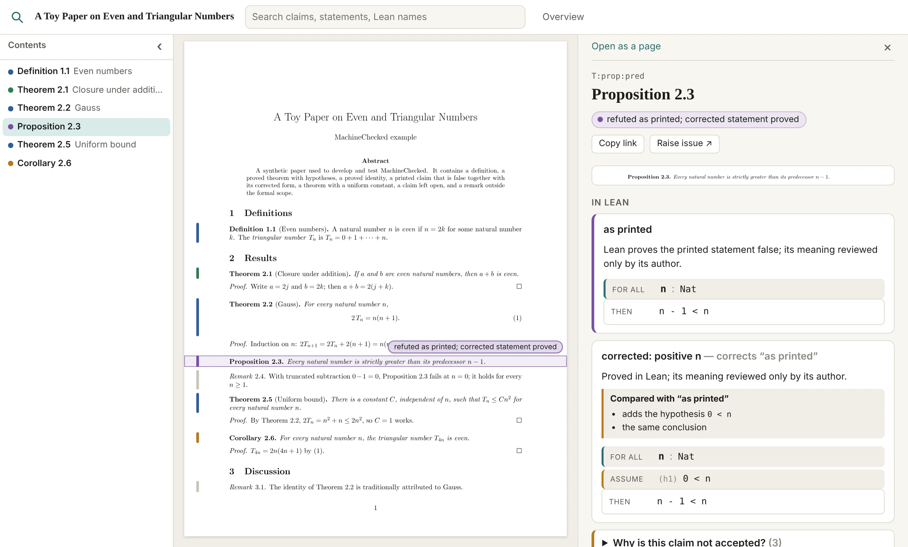

A reader for formalised mathematics
MachineChecked puts a mathematical paper beside its Lean formalisation. Select a statement to explore its Lean counterpart, see what has been proved, and find what still needs review.

In the paper
Proposition 2.3. Every natural number is strictly greater than its predecessor n − 1.
An intentionally false example from the synthetic demo. In Lean’s natural numbers, 0 − 1 = 0.
What was established
A Lean proof and its correspondence to the paper are separate questions. MachineChecked shows both, without treating a link as a review.
Start in a built Lean project. MachineChecked finds the paper, its numbered statements and the project's Lean declarations.
Follow existing \lean{...} tags, inspect suggestions, or choose a Lean declaration yourself. A link is never presented as a mathematical review.
Browse the two side by side, record reviews if you wish, and export a standalone HTML reader for others. Anyone reading it can raise an issue on a claim, in the audit’s own GitHub repository, with the claim and its Lean filled in.
In your Lean project's directory, build the modules you want to inspect and run:
lake build uvx --from git+https://github.com/cgarryZA/MachineChecked machinechecked view
Python 3.11+, Lean and TeX Live are needed for a LaTeX paper; the compiled web reader is included. No custom claim registry or Node installation is required. Use machinechecked build to export a standalone HTML file.